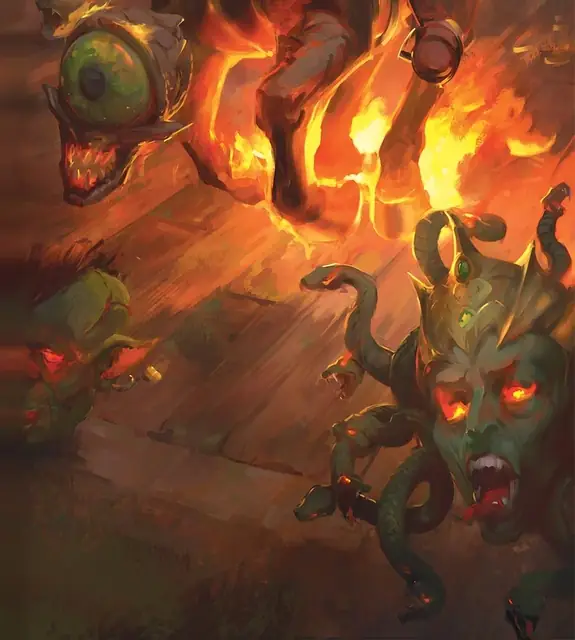

Мёртвая голова
Death’s Head
Крошечная Нежить, Хаотичная Злая

Класс Защиты 16 Инициатива +1 (11)
Хиты 17 (5к4 + 5)
Скорость 5 футов, Полёта 30 футов (парит)
| мод | спас | ||
|---|---|---|---|
| СИЛ | 8 | −1 | −1 |
| ЛОВ | 13 | +1 | +1 |
| ТЕЛ | 12 | +1 | +1 |
| мод | спас | ||
|---|---|---|---|
| ИНТ | 5 | −3 | −3 |
| МДР | 14 | +2 | +2 |
| ХАР | 3 | −4 | −4 |
Сопротивление урону Некротический
Иммунитеты Яд; Истощение, Отравленный
Чувства пассивное Восприятие 12
Языки нет
Опасность 1/2 (100 опыта; БВ +2)
Особенности
Облёт. Мёртвая голова не Провоцирует атак, когда вылетает из вражеской досягаемости.
Действия
Укус. Бросок рукопашной атаки: +3, досягаемость 5 фт. Попадание: 3 (1к4 + 1) Колющего урона плюс 7 (2к6) Некротического урона.
Бонус мастерства +2
Среда обитания Болота, Город, Леса
Сокровища Отсутствуют
Мёртвые головы
Летающие немёртвые головы
Мёртвые головы — это отделённые от тела летающие головы, оживлённые злой магией. Эти полные ненависти головы различаются по виду и степени разложения, а некоторые обладают сверхъестественными силами, связанными с теми существами, которыми они когда-то были. Совершите два броска по таблице «Облик мёртвой головы» для вдохновения или определите сами внешний вид мёртвой головы.
Облик мёртвой головы
| к10 | Голова принадлежит… | И выделяется… |
| 1 | Медведю | Налитыми кровью глазами |
| 2 | Обгоревшему трупу | Кровавой пеной на губах |
| 3 | Карге | Лишней парой глаз |
| 4 | Гуманоиду | Боевой раскраской на лице |
| 5 | Медузе | Железной маской |
| 6 | Свежевателю разума | Вытянутым языком |
| 7 | Нотику | Длинными волосами |
| 8 | Акуле | Заострёнными зубами |
| 9 | Волку | Деревянной челюстью |
| 10 | Лосю | Обнажённой костью |
Самый обычный вид мёртвой головы возникает от Гуманоида или животного — возможно, после несправедливой казни или смерти от рук охотника за головами — такого как, например, дуллахан. Летая и кусая, мёртвая голова терзает своих жертв, пока её не уничтожат.